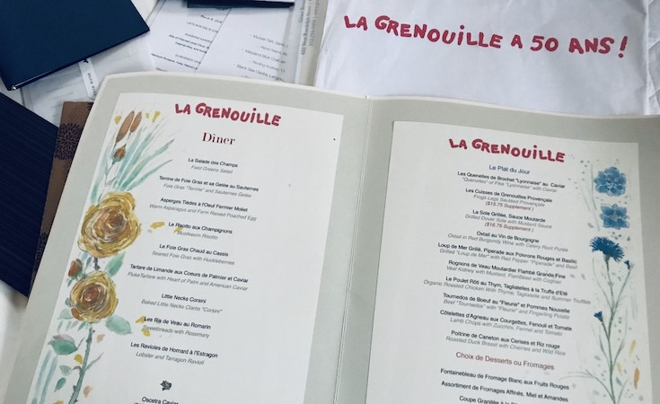
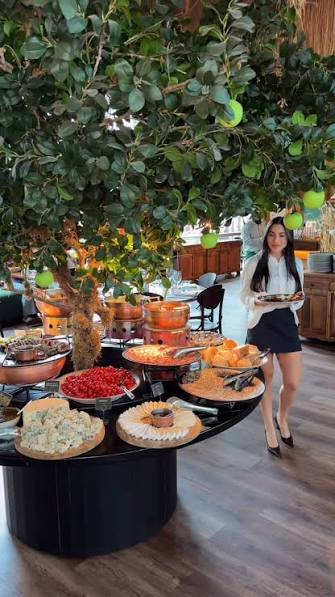
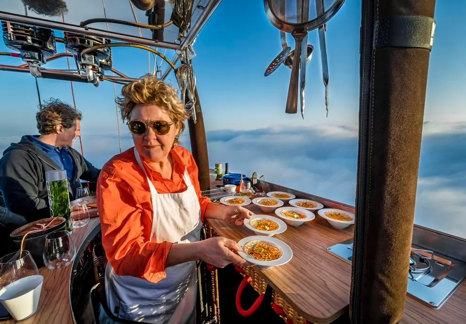
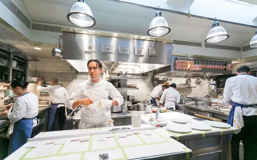

Meus serviços
Cada formato, uma experiência.
Do jantar mais íntimo ao evento corporativo, cada serviço é desenhado pra se encaixar na sua ocasião — não o contrário.

Menus Especiais
Cardápios autorais criados sob medida para datas comemorativas, aniversários ou qualquer ocasião que peça algo diferente do óbvio.
Como funciona: conversamos sobre a ocasião, eu desenho o menu e você aprova antes do grande dia.

Jantares Privados
Um jantar completo, com técnica de restaurante, servido dentro da sua própria casa — do aperitivo à sobremesa.
Como funciona: chego com equipe reduzida, cozinho no local e cuido de tudo, do preparo ao prato lavado.

Catering para Eventos
Cardápios que se adaptam ao tamanho e ao clima do seu evento, de encontros pequenos a celebrações grandes.
Como funciona: definimos formato, número de convidados e estilo de serviço — buffet, estações ou prato servido.

Experiências Personalizadas
Menus degustação narrativos, pensados prato a prato para contar uma história específica — a sua.
Como funciona: planejamos juntos harmonização, ritmo da noite e o efeito que cada prato deve causar.

Aulas de Culinária
Aulas práticas, individuais ou em grupo, pensadas pra quem quer aprender técnica de verdade — sem enrolação.
Como funciona: escolhemos o tema juntos, e a aula acontece na sua cozinha ou em um espaço combinado.